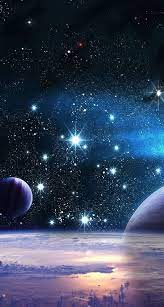
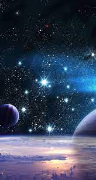

Mercúrio: O planeta mais próximo do Sol, que gasta somente oitenta e oito dias para completar seu período de translação, possui uma aparência acinzentada com inúmeras marcas de impactos que lembram a superfície lunar.
Vênus: O segundo planeta a partir do Sol possui tamanho, composição e massa similares à Terra. Contudo, o seu período de rotação é de 243 dias, superior ao tempo que Vênus leva a completar uma órbita ao redor do Sol, pelo que um dia venusiano é mais longo que um ano venusiano.
Terra: O maior planeta telúrico e o quinto maior do Sistema Solar, é o terceiro a contar do Sol. Seu núcleo é constituído principalmente por ferro, ao redor do qual encontra-se uma camada de rochas fundidas, por sua vez cercada por uma crosta relativamente fina e dividida em placas tectônicas em constante movimento, responsáveis pelas atividades sísmica e vulcânica na Terra.
Marte: O planeta telúrico mais afastado do Sol passou a ser um mundo intrigante a partir do advento das observações telescópicas. Exibindo calotas polares variáveis e características superficiais mutantes, levantava suspeitas da possível existência de vida fora da Terra
Júpiter: O maior e mais massivo planeta do Sistema Solar exibe peculiares faixas multicoloridas criadas por fortíssimos ventos que percorrem faixas longitudinais na parte superior de sua atmosfera.
Saturno: O segundo maior planeta do Sistema Solar possui uma composição semelhante à de Júpiter, rica em hidrogênio e hélio. Sua atmosfera, em função do calor irradiado do interior de Saturno, apresenta-se em constante turbulência, com ventos de mais de 1 800 quilômetros por hora que criam bandas visíveis nas suas camadas superiores em tons de amarelo e dourado
Urano: O sétimo planeta a partir do Sol foi o primeiro a ser descoberto com o auxílio de um telescópio em 1781. À semelhança de Vênus, o sentido de rotação de Urano é retrógrado relativamente ao da maioria dos corpos do Sistema Solar.
Neturno: O gigante e gelado Netuno é o planeta mais afastado do Sol e foi o primeiro a ser localizado a partir de cálculos matemáticos em vez de observações regulares do céu.
Referências